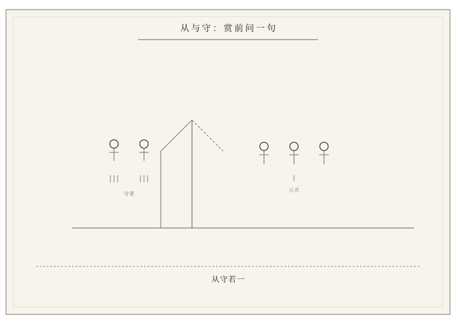

檀弓下 · 四·五十三 · 第 378 课
卫献公出奔，反于卫，及郊，将班邑于从者而后入。柳庄曰：「如皆守社稷，则孰执羁靮而从？如皆从，则孰守社稷？君反其国而有私也，毋乃不可乎！」弗果班。
说什么事：卫献公出奔，后返国。到郊外，打算先分邑给随行的人，再入城。柳庄说：「若人人都守社稷，谁牵着马缰跟您走？若人人都跟您走，谁守社稷？君返国而有私心，恐怕不可以吧！」于是终于没有分。
落在哪一层：以「问谁没跟来」正赏。赏之失，不在赏，在只见所赏者。
为何编在此位：上节论贫者之礼，此节论君者之赏。一在不足中守分寸，一在有余中守公平。
【经】卫献公出奔，反于卫，及郊，将班邑于从者而后入。柳庄曰：「如皆守社稷，则孰执羁靮而从？如皆从，则孰守社稷？君反其国而有私也，毋乃不可乎！」弗果班。
【注】欲赏从者，以惧居者，献公以鲁襄十四年出奔齐，二十六年复归于卫。／言从、守若一。靮，纼也。／言有私则生怨。
【疏】此一节论卫君归国不合私赏从者之事。／经直云「班邑于从者」，郑知「以惧居者」，见下柳庄云「如皆从，则孰守社稷」，为居者而言，明知献公欲惧居者也。故《左传》云「献公反国，使人责大叔仪」是也。／知「献公以鲁襄公十四年出奔齐」者，案襄十四年《左传》云，卫献公戒孙文子、甯惠子食，二子皆朝服而朝，日旰不召。公射鸿于囿，二子从之，公不释皮冠而与之言。二子怒，故攻公，公出奔齐。二十六年传云，甯惠子之子甯喜以父言攻孙氏而纳卫侯，二十六年复归于卫。
出奔 出亡。
反于卫 返回卫国。
及郊 到了城郊。
班邑 分赐采邑。
从者 随行出亡之人。
柳庄 卫大史，屡谏献公。
羁靮 马缰与缰绳。靮，纼。
社稷 国家。
有私 有偏私。
弗果班 终于没有分。
卫献公出奔，后来返回卫国。到郊外，打算先分采邑给随行的人，再入城。柳庄说：「若人人都留守社稷，谁牵着马缰跟您走？若人人都跟着您走，谁守社稷？君返国而先有私，恐怕不可以吧！」于是终于没有分。
此章记一句话止一次滥赏。赏本是好意，柳庄不说「不该赏」，只说「还有没赏的人」。
一句话，把「恩」换成了「分」。
第一层 「将班邑于从者而后入」 班邑在后，入城在前？不，是先班而后入。
次序即是心事。 先赏，后入——赏在入城之前，说明此赏不只是酬劳，更是要带着一批人进门。
注云「欲赏从者，以惧居者」，一句话点破：赏从者，是为了慑留在国内的人。
第二层 「如皆守社稷，则孰执羁靮而从」 柳庄第一问：若人人留守，谁跟你走？
此问承认从者之功。他不是要抹掉从者的苦，他先认这份苦。
第三层 「如皆从，则孰守社稷」 第二问：若人人跟你走，谁守国家？
此问立起另一份功：留守者之功。留守者无功于君之身，而有功于君之国。
此两问并列，是一副天平的左右两个盘。
第四层 「从、守若一」 注四字：「言从、守若一。」
此四字最要紧。 从者与守者，在礼上是一样的人，各尽其分而已。既一样，则不可独赏一边。
第五层 「君反其国而有私也」 柳庄不说「赏不当」，说「有私」。
一词之换，把技术问题变成名分问题。 赏之失不在数目，在「私」——君之赏，当以国论，不当以己论。
注云「言有私则生怨」，补出后果：赏一边，则另一边必怨。
第六层 「弗果班」 此赏已到郊外，行将施行，而止。
礼之谏，常在事情已动而未见形之际。 若待班邑已下，则改之难；在郊未入，一言可止。
第七层 献公之为人 疏引襄十四年事：戒二子食而日旰不召、射鸿不释皮冠而与言。
一个不释皮冠的人，返国后先班邑而后入，其性可见。 柳庄之谏，是对着一个不肯低头的君说的。
故其言之法亦须如此：不斥其非，只摆两问。
与今日何干 今之团队，功常归于「在场者」，而「守着摊子的人」无声。
此章给一句话：赏之前，先问一句「谁没来」。
| 左 | 右 |
|---|---|
| 出奔 | 失国 |
| 反于卫 | 复国 |
| 及郊将班邑 | 先赏后入 |
| 赏从者以惧居者 | 赏之私 |
| 孰执羁靮而从 | 认从者之功 |
| 孰守社稷 | 立守者之功 |
| 从守若一 | 其分相同 |
| 有私则生怨 | 赏一边必怨 |
| 弗果班 | 一言止之 |
画一座城门的内侧，视点平视，城门半开。门内画两个人形，皆正面立于门柱之侧，脚下各有几束捆好的禾，示守者。门外左侧画三个人形，皆侧身向外，其中一人手持一根短缰绳搭在肩上，示从者。两队人之间不画连线，只在地面上画一道横线，将门内外分开。不画文字。赭色只用在那道横线的中段一处。
